DEFINITION
A concurrent disorder, pregnancy-related complication, or external factor that jeopardizes the health of the woman, the fetus, or both. Often more than one factor; it can be internal or external.
NUR 234 · Study collection · Added November 10, 2026
Pregnancy complications, sudden pregnancy complications, labor and birth — with practice questions and original course pictures.
Original document · page 1
Scoped to the Exam 3 Module Content Review (MCR): every topic it lists, built only from your uploaded materials (Chapter 20, 21, 23 and 24 slides, the weekly summaries, and the six lecture recordings). Pictures come from the course slides. The professor's emphasis comes from the recorded lectures (automated transcripts, so a few spots had audio gaps). Practice questions follow each module, with answers and rationales on the next pages; the dashed boxes are for your own notes.
What does it hypotheses solutions outcomes What matters What will I do? mean? Where do I start? What can I do? Did it help? most?
Walk every topic through these steps: what cue matters, what it means, where you start, what you can do, what you will do, and whether it worked.
Teal = Module 8 (Chapter 20) Crimson = Module 9 (Chapter 21)
Blue-indigo = Module 10 (Chapters 23 & 24) Gold = Professor emphasized it in lecture
Violet = Priority / safety: first action, can't-miss Blue = Memory tip (the professor's own analogies)
Dashed box = your notes
Dosage calculations are also on the MCR, but none of your uploaded materials cover them. The MCR says to use faculty, the learning center, ATI modules and tutors for that piece. The professor's study rule for Chapter 20 applies to the whole exam: study what is on the slides, not every condition in the textbook. Charts are not for memorizing, but you must be able to apply them to a case.
Original document · page 2
Paraphrased from the six lecture recordings. Right column = where it is in this guide.
Know your normals Establish baselines; never dismiss a finding with "she's pregnant." Knowing normal 8.0 pregnancy changes is how you eliminate wrong answers. Left vs right heart failure Lean on med-surg: right backs up into the body, left backs up into the lungs. Heart failure 8.1 medications are not tested. Positioning No one in labor is supine. Orthopnea: sit her up first. Cardiac clients: head up, left tilt. 8.1 Anticoagulants They do not bust the clot; the nursing concern is bleeding. Prevention matters most. 8.3 Asymptomatic UTI Can climb to pyelonephritis, sepsis and preterm labor. Pyelo pain is reproduced by tapping 8.4 over the kidney. Diabetes Insulin does not cross the placenta. Newborn hypoglycemia: feed within 30 minutes, heel 8.5 stick. No need to memorize the GTT chart.
Any bleeding Not normal in pregnancy; always investigate. A client who thinks she is miscarrying comes in 9.0 to be examined. Miscarriage types Sort them by how much tissue has been lost. Missed abortion is linked to DIC. 9.1 Previa vs abruption Painless bright red vs painful dark red with a board-like abdomen. No vaginal exams with 9.5 previa. DIC labs Watch platelets and fibrinogen; D-dimer is raised in pregnancy anyway. 9.6 Terbutaline + Terbutaline is a "band-aid" that buys time for betamethasone. Hold terbutaline if HR is over 9.7 betamethasone 120. Betamethasone before 34 weeks. Magnesium sulfate Frequent assessment (DTRs, RR, LOC, urine). Toxicity: stop the infusion first, then level, 9.8 calcium gluconate, provider. Severe-range BP Systolic over 160 or diastolic over 110 = stroke risk; antihypertensive within about 30 minutes. 9.8
Bladder Keep it empty: a full bladder blocks descent and contraction, and raises hemorrhage risk. 10.2 Oxytocin High-alert drug; "it is not a race." Too-frequent contractions or a bad strip: turn it off first. 10.5 Cord prolapse Lift the presenting part off the cord and never let go; positioning is only a band-aid. 10.7 Shoulder dystocia McRoberts, suprapubic (never fundal) pressure, time head-to-body, check the arm and 10.8 clavicle. Vasa previa The bleeding is fetal blood. Know accreta vs increta vs percreta. 10.12 Amniotomy Fetal heart tones before and after is the most important step. 10.13 Cesarean Classical incision = no vaginal birth later. 10.16
☐ High-risk pregnancy 8.0 ☐ Left/right heart failure 8.1 ☐ Chronic hypertension 8.2
☐ Venous thromboembolism 8.3 ☐ UTI / pyelonephritis 8.4 ☐ Diabetes / GDM 8.5
☐ Spontaneous abortion 9.1 ☐ Ectopic pregnancy 9.2 ☐ Trophoblastic disease 9.3
☐ Premature cervical dilation 9.4 ☐ Placenta previa 9.5 ☐ Placental abruption 9.5
Original document · page 3
☐ DIC 9.6 ☐ Preterm labor 9.7 ☐ Hypertensive disorders 9.8
☐ HELLP syndrome 9.8 ☐ Amniotic fluid volume 9.9 ☐ Isoimmunization / RhoGAM 9.10
☐ Multiple gestation 9.11 ☐ ☐
☐ Dysfunctional labor 10.2 ☐ GBS 10.1 ☐ Induction / augmentation 10.4
☐ Cervical ripening / Bishop 10.4 ☐ Uterine rupture / inversion 10.6 ☐ Amniotic fluid embolism 10.6
☐ Umbilical cord prolapse 10.7 ☐ Posterior / breech 10.9 ☐ Macrosomia 10.8
☐ Shoulder dystocia 10.8 ☐ Inlet / outlet contraction 10.10 ☐ External cephalic version 10.9
☐ Forceps / vacuum 10.11 ☐ Velamentous insertion 10.12 ☐ Vasa previa 10.12
☐ Accreta / increta / percreta 10.12 ☐ Amniotomy 10.13 ☐ Episiotomy 10.14
☐ Internal monitoring 10.15 ☐ Cesarean birth 10.16 ☐ Practice questions 8.6 · 9.12 · 10.17
Original document · page 4
A family experiencing a pregnancy complication from a preexisting or newly acquired illness. Focus only on the conditions on the slides; the textbook chapter covers far more than the exam.
A concurrent disorder, pregnancy-related complication, or external factor that jeopardizes the health of the woman, the fetus, or both. Often more than one factor; it can be internal or external.
Maternal-fetal medicine (MFM) specialists follow the client closely and recommend the delivery plan to the OB (they usually do not deliver). Expect increased surveillance.
Most conditions affect the fetus in some way. Even when a condition does not physically reach the baby, the psychological toll on the mother matters, and high stress itself can harm the baby.
Measurable: vital signs, blood pressure, weight (every visit), fundal height, labs, fetal heart rate, fetal movement felt by the provider, edema.
Reported: pain, nausea, heartburn, anxiety, shortness of breath, fatigue, appetite changes, feeling the baby move.
Edema of the feet, nausea and vomiting, frequent urination, appetite changes, slightly higher heart rate and respiratory rate, breast tenderness.
High blood pressure (still a concern in pregnancy). Rapid weight gain, such as 4 lb in a week, is a red flag in anyone.
Establish each client's baseline so you can spot a significant change early. Never dismiss a finding with "she's pregnant, that's why" (example: a client who used to exercise is suddenly winded early in pregnancy, so investigate). Treat the patient, not the monitor: a client who reports contractions that do not show on the monitor is still a problem.
Original document · page 5
Right vs left side heart failure (Ch 20 slide) Blood volume and cardiac output rise 30–50%
Blood volume and cardiac output rise 30–50%, gradually, peaking at 28–32 weeks (when decompensation is most likely to show). Labor is the body's "super stress test."
The baby ("patient number two"): is the fetus getting enough oxygen, nutrients and blood flow if the mother cannot perfuse herself? Left-sided failure is more detrimental to the fetus.
See MFM as soon as the first period is missed, so baselines and trends can be followed.
What is happening
Signs and symptoms
What is happening: Right ventricle cannot pump blood to the lungs; blood backs up into the venous system.
Signs and symptoms: Peripheral edema, JVD, enlarged liver and spleen, ascites
What is happening: Left ventricle cannot pump blood out to the body; blood backs up into the lungs.
Signs and symptoms: Crackles, pulmonary edema, dyspnea, orthopnea, tachypnea, weak pulses, slow cap refill, fatigue
Hard to breathe lying down. First action: sit her up so fluid settles to the bottom of the lungs.
Shortness of breath while sleeping: at rest, extra fluid moves back into circulation and worsens pulmonary edema.
Promote rest (two rest periods a day plus a full night's sleep); avoid strenuous activity (may stop working early); low-sodium diet (avoid processed, packaged, canned foods; read labels); daily weight at the same time; take cardiac meds exactly as prescribed and report barriers such as cost; avoid infection (hand and dental hygiene; endocarditis risk).
Frequent vital signs; continuous fetal monitoring; head of bed up and left tilt (never supine); epidural to reduce stress and bearing down; assisted vaginal delivery (forceps or vacuum) to reduce pushing.
Watch closely right after the placenta delivers: a massive shift of blood back into the systemic circulation (the uterus was getting about 500 mL/min) means high risk of cardiac collapse; hemorrhage risk is also highest then. Assess for heart failure; compression (SCD) boots if bed-bound; stool softeners; artificial valves may get prophylactic antibiotics.
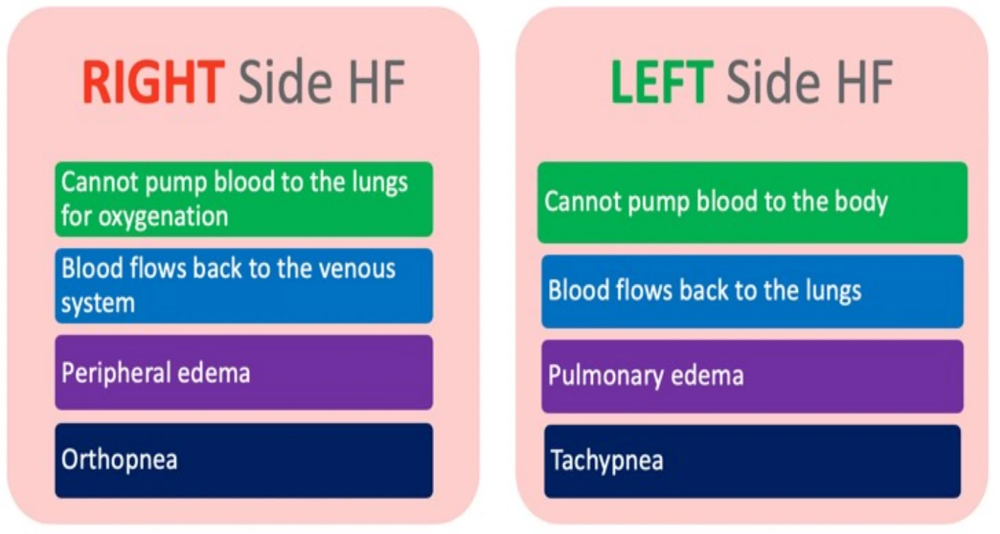
Original document · page 6
Know right vs left failure cold; the pathophysiology is the same as med-surg. Heart failure medications are not tested. Intrapartum priorities (positioning, epidural, assisted delivery) all lower the heart's workload.
Left = lungs. Right side backs up into the body (edema, JVD). Pregnancy is "the body's natural stress test," and labor is the super stress test.
On the MCR for Module 8. In lecture it was treated as both a vessel and a kidney problem: hypertensive disorders show up as high blood pressure plus poor kidney function, often with protein in the urine. The full detail (chronic and gestational hypertension, preeclampsia, eclampsia, HELLP, magnesium) is taught in Module 9: see 9.8.
Protein in the urine at a routine prenatal dip prompts a preeclampsia work-up. Prenatal visits cannot always prevent these disorders, but they catch them early, which is why no visit should be skipped.
Hypercoagulability, venous stasis, vessel injury. Any clot fits one of these three, and pregnancy meets all three.
Hypercoagulable state (estrogen); blood pools in the legs and the uterus compresses the iliac veins and inferior vena cava; decreased peripheral vascular resistance; vessel injury during delivery or surgery.
Immobility, estrogen birth control, long-distance travel, smoking and hypertension (vessel injury), obesity, surgery, hospitalization in the past 2 weeks, AFib or stroke.
Unilateral edema, warmth, redness, pain and tenderness (worse with walking or standing). Measure and compare calf diameters.
Ultrasound; PTT and INR help. D-dimer is not reliable in pregnancy (pregnancy alone raises it, as does surgery).
Ambulation (best), hydration, SCD boots, prophylactic anticoagulant (e.g., Lovenox) for high- risk clients such as post-cesarean with BMI over 30 or prior DVT. Cesarean clients are usually up within about 8 hours.
Anticoagulants thin the blood so the clot cannot grow and blood can flow around it; the body reabsorbs the clot. Delivery may be timed and the drug stopped about 24 hours before.
Monitor for bleeding on anticoagulants.
Original document · page 7
Anticoagulants do not bust the clot. Prevention matters most because every pregnant client is already at risk.
Ureters dilate (progesterone) and are compressed, so urine stagnates even when she voids often. About 10–15% of pregnant women get a UTI. Weekly summary causes: asymptomatic bacteriuria, urinary stasis, glycosuria. Usual organism: E. coli (ascending infection).
Every prenatal visit: nitrites and WBCs (infection), glucose (diabetes clue, may prompt an early GTT), protein (preeclampsia work-up).
It can climb to the kidney (pyelonephritis), cause sepsis, and trigger preterm contractions and delivery.
Dysuria/burning, urgency, frequency, foul-smelling or cloudy concentrated urine, hematuria, possible fever.
Infection in the pelvis of the kidney. Severe flank pain that the provider reproduces by tapping over the kidney; fever; very sick. Inpatient IV antibiotics; expect uterine irritability and preterm contractions, so monitor the fetus; stay until fever-free and not contracting.
Labor pain is rhythmic and sweeps from the back around to the front. Pyelo pain sits over the kidney and hurts when tapped.
If urine grows Group B strep (or the late third-trimester GBS culture is positive), she automatically gets antibiotics in labor (GBS is linked to newborn pneumonia). See 10.1.
Wipe front to back; void completely and don't hold urine; void before and after intercourse; increase fluids; cotton underwear, loose clothes, no wet clothes; shower; no douching, bubble baths or bath bombs; cranberry juice (acidifies urine, bacteria can't stick to the bladder wall); finish prescribed antibiotics.
Why an asymptomatic UTI is dangerous (pyelo, sepsis, preterm labor), and how flank pain differs from back labor.
Original document · page 8
Autoimmune destruction of beta cells; no insulin; lifelong injections.
Insulin resistance or too little insulin; diet, exercise, oral meds, sometimes insulin.
Tight glucose control is paramount before pregnancy and in the first trimester, when organs form. High sugars raise the risk of Gestational diabetes (Ch 20 slide) anomalies, miscarriage and stillbirth.
Pregnancy hormones (hPL, estrogen, progesterone) make cells resistant to insulin, causing high glucose after meals.
Insulin does not cross the placenta; glucose does. The baby makes its own insulin from about 16–18 weeks, which acts like a growth hormone, so the baby grows large (macrosomia: big cheeks and face; shoulder dystocia risk).
The cord is cut, the sugar supply stops, but the baby's insulin is still high, so glucose plummets. Feed within 30 minutes; heel-stick glucose (side of the heel); watch for jitteriness, lethargy, poor feeding, crying. Very low sugars may need NICU.
Previous GDM, BMI over 30, glucose in the urine, family history, a previous baby over 9 lb or a large fetus, previous unexplained fetal loss. (Type 1 and type 2 clients are not tested; they are already diagnosed.)
Everyone at 24–28 weeks. 1-hour test: 50 g glucose drink, non-fasting, draw at 1 hour; over 140 mg/dL means she needs the 3-hour test. 3-hour test: fasting draw, 100 g drink, then draws at 1, 2 and 3 hours (four draws). Two abnormal values = GDM.
Fasting
1 hour
2 hours
3 hours
95
180
155
140
Carb control: complex instead of simple carbs; fruit counts as carbs; dietitian; carbs about 40–50% of intake.
Fasting and after-meal finger sticks with a food and glucose diary. Ideal maternal glucose under 90.
About 30 minutes daily; exercise makes cells more sensitive to insulin.
Many control it with diet and exercise. Insulin needs rise as the baby grows (2nd and 3rd trimesters), so doses are adjusted.
Growth ultrasounds, possibly weekly non-stress tests, placental function tests, kick counts.
Glucose usually normalizes after delivery, but she is about 50% more likely to develop type 2 diabetes later.
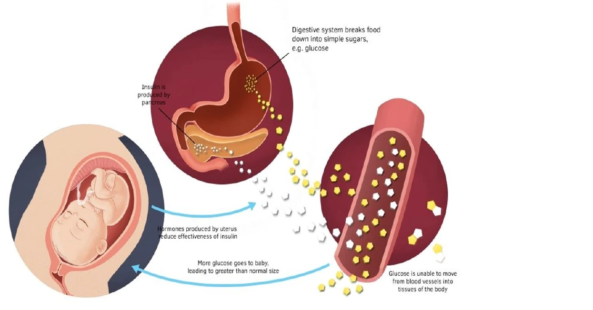
Original document · page 9
Insulin does not cross the placenta. You do not need to memorize the GTT chart (values will be given), but know the two-abnormal-values rule. Her practice example had an abnormal fasting and 1-hour value, so it was a GDM diagnosis.
"Sugar mama": mom sends extra sugar, the baby makes extra insulin and grows. Cut the cord, the sugar mama is gone, and the insulin is still high, so the baby's sugar drops.
Original document · page 10
8 weeks pregnant with known cardiac disease, followed by MFM. Later in pregnancy she develops gestational diabetes. (Built from the lecture's cardiac NCLEX item and the GDM content.)
A. "I've been really constipated."
B. "I'm nauseated most mornings."
C. "I gained 4 pounds this week and my ankles are swollen."
D. "I have to urinate all the time."
A. Crackles in the lungs
B. Jugular vein distension
C. Orthopnea
D. Ascites E. Weak peripheral pulses F. Dyspnea
M8-3 · MC · take action In labor, she is lying flat and struggling to breathe. What is the nurse's first action?
A. Increase the IV rate
B. Raise the head of the bed and tilt her to the side
C. Call for an epidural
D. Apply a fetal scalp electrode
M8-4 · SATA · generate solutions Which intrapartum interventions reduce cardiac workload for this client? Select
A. Epidural anesthesia
B. Supine position for monitoring
C. Assisted vaginal delivery (forceps or vacuum)
D. Prolonged pushing in second stage E. Frequent vital signs F. Continuous fetal monitoring
A. At 12 weeks
B. During early latent labor
C. Right after the placenta delivers
D. At the 6-week postpartum visit
Original document · page 11
M8-6 · Matrix · analyze cues Her 3-hour GTT results are below (thresholds will be given: fasting 95, 1 h 180, 2 h
Fasting: 98 mg/dL ○ ○
1 hour: 185 mg/dL ○ ○
2 hours: 150 mg/dL ○ ○
3 hours: 130 mg/dL ○ ○
M8-7 · MC · take action Her newborn (10 lb) is jittery and feeding poorly at 1 hour of life. What is the priority?
A. Swaddle and recheck in 2 hours
B. Heel-stick blood glucose and feed
C. Give the first bath
D. Check the baby's temperature only
A. Maternal insulin crossed the placenta
B. The baby's own insulin is still high after the maternal glucose supply is cut off
C. The baby has type 1 diabetes
D. Formula is low in sugar
A. "I'll wipe front to back."
B. "I'll void before and after intercourse."
C. "Bubble baths will help me relax."
D. "I'll hold my urine until it's convenient." E. "I'll drink more fluids and wear cotton underwear."
M8-10 · MC · analyze cues At 30 weeks she has fever and pain that increases when the provider taps over her
A. Back labor
B. Pyelonephritis
C. Placental abruption
D. Round ligament pain
A. Bilateral ankle edema
B. One calf warm, red and larger than the other
C. D-dimer above the non-pregnant range
D. Pain at the incision
A. "This medicine will dissolve the clot."
B. "It keeps the clot from getting bigger; report any unusual bleeding."
C. "I can stop it once my leg feels better."
D. "It works by raising my platelets."
Original document · page 12
Rapid weight gain (4 lb in a week) with swelling is a red flag at any gestation, especially with cardiac disease. Constipation, nausea and frequency are expected early in pregnancy.
Left = lungs: crackles, dyspnea, orthopnea, and weak pulses from poor output to the body. JVD and ascites are right-sided (backing up into the body).
Orthopnea: sit her up so fluid settles; no laboring client should be supine. Side tilt helps perfusion.
Epidural reduces stress and bearing down; assisted delivery reduces pushing; frequent VS and continuous monitoring are intrapartum care. Supine and prolonged pushing add workload.
After the placenta delivers, a large volume of blood shifts back into the systemic circulation; the heart must adapt. Hemorrhage risk is also highest then.
Two abnormal values out of four make the diagnosis (the professor's own example used an abnormal fasting and 1-hour value).
Newborns of diabetic mothers are at risk for hypoglycemia (jittery, lethargic, poor feeding). Check glucose by heel stick and feed (within 30 minutes of birth).
Insulin does not cross the placenta. The baby made extra insulin in response to maternal glucose; when the cord is cut the supply stops but insulin stays high.
Bubble baths irritate the urethra; holding urine causes stasis.
Pyelonephritis pain is over the kidney and reproduced by tapping, with fever. Back labor is rhythmic and sweeps from back to front.
DVT is usually unilateral: warmth, redness, swelling, compare calf diameters. D-dimer is unreliable in pregnancy and after surgery.
Anticoagulants do not bust the clot; they keep it from growing so blood can flow around it. The nursing concern is bleeding.
Original document · page 13
Bleeding, preterm labor, hypertensive disorders, and the conditions that put a pregnant woman and her fetus at sudden risk.
Any bleeding in pregnancy is not normal and is reported and investigated. It may be benign, but it can come from something that sustains the pregnancy.
Has she confirmed it? Early losses can happen before she knows. Separate a period from bleeding in pregnancy.
Needed before anything else makes sense.
How long, still happening, what was she doing (lifting, cleaning).
Brown vs bright red vs dark red; fluid; clots; tissue. "Small amount" means different things to different people, so quantify (saved pads or towels, saved tissue).
Any pain, and where.
Rh status (Rh-negative mothers need RhoGAM; see 9.10).
Falling BP, racing heart, fast breathing, low SpO2, pale, cool and clammy, diaphoretic, fatigue, confusion, anxiety or a sense of doom.
Common causes (any can occur at any time)
Spontaneous abortion; ectopic pregnancy
Gestational trophoblastic disease (molar pregnancy); premature cervical dilation
Placenta previa; placental abruption; preterm labor
A client who thinks she is miscarrying should come in to be examined and save any tissue. Lecture NCLEX item: wrong answers were bed rest for 24 hours (won't stop it, gives no information), "spotting is harmless" (dismissive), and a tampon (absorbs blood you need to quantify; foreign body). Only the right answer was an assessment.
Pregnancy loss before 20 weeks (medical term; not the same as elective termination, so choose words carefully). About 1 in 5 pregnancies. Usual cause: a development problem (often chromosomal) not compatible with life.
Cervix / tissue
Fetal heart tones
Key cues and care
Cervix / tissue: Closed; no tissue passed
Fetal heart tones: Present
Key cues and care: Spotting or brown discharge, no pain, not contracting. Most hopeful; follow up with the OB.
Original document · page 14
Dilated; membranes bulging; no tissue yet
Usually present
Contractions, dilation, bleeding. Cannot be stopped.
Delivery started; fetal parts felt; some products remain
Variable
More cramping and bleeding; started but not finished.
All products passed
Absent
Everything has passed (she may bring tissue in).
No labor signs, no cervical change
Absent
She may not know. Tissue becomes necrotic and infected: septic shock. Still must be delivered.
Sort the types by how much tissue has been lost, not by memorizing pain and bleeding descriptions. A missed abortion (like a retained stillbirth) is strongly linked to DIC. Bed rest and pressure on the cervix do not stop an imminent loss.
The fertilized egg implants outside the uterus, usually in the fallopian tube. It gets a blood supply and grows, but it is not viable. Can happen in a first pregnancy.
IUD in place; tubal ligation; pelvic inflammatory disease (a "biggie"); STIs; previous tubal or pelvic surgery; endometriosis; PCOS: anything that scars, narrows or damages the tube.
Positive pregnancy test, fullness or bloating at the site, discomfort. Ectopic implantation sites (Ch 21 slide)
Sudden severe one-sided lower abdominal pain plus hypovolemic shock from internal bleeding. Lecture case: BP 95/58, HR 132, RR 24, SpO2 92%, diaphoretic, pale.
Unruptured: methotrexate (shrinks and eliminates the cells). Ruptured: surgery to stop the bleed; damaged tube removed (higher risk of another ectopic and infertility).
Stop prenatal vitamins and folic acid (they support cell growth); no alcohol (severe vomiting); serial hCG levels until they drop; wait a few months before conceiving so hCG is reliable.
Rh-negative clients get RhoGAM.
Don't just memorize the risk factors; they make sense (an IUD blocks implantation in the uterus; a ligation or scarring blocks the tube). Left-sided pain + shock signs + a surprise pregnancy with an IUD = think ectopic.
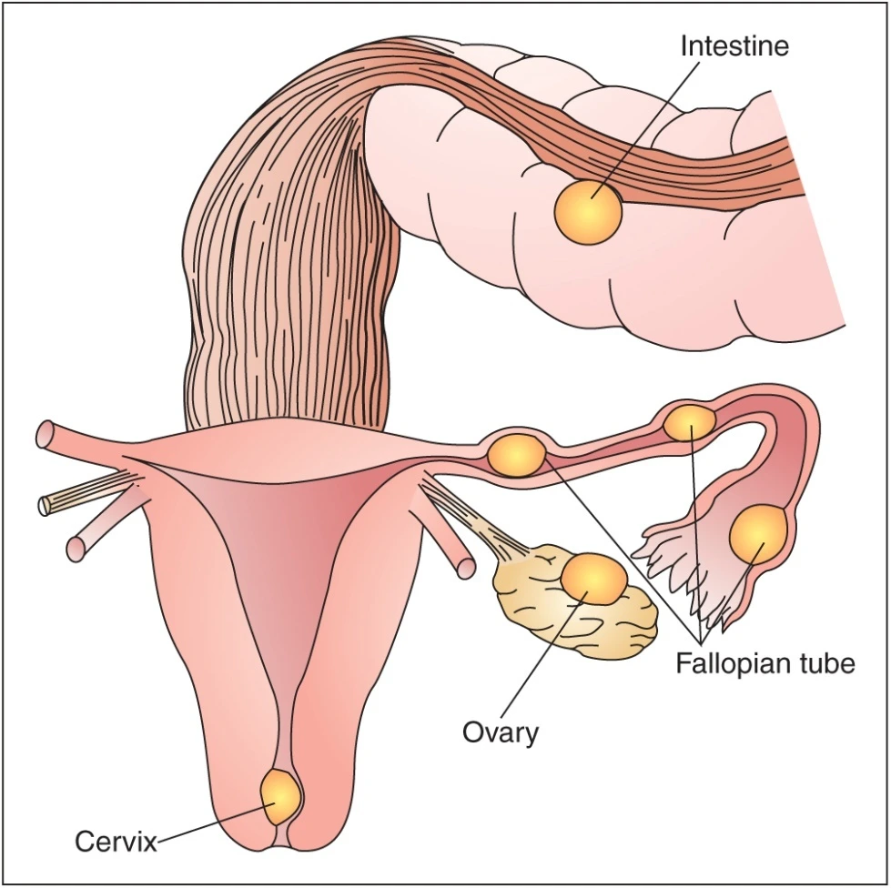
Original document · page 15
The cells that should become the placenta (trophoblasts) multiply abnormally and fill with fluid. No viable fetus; scrambled genetic material. Cannot be predicted or prevented.
Clomid use, age over 40, more common in the Asian population. Hydatidiform mole (Ch 21 slide)
Hydatidiform mole (Ch 21 slide) Very high, rising hCG; uterus larger than dates (case: 13 weeks, fundus near the umbilicus 20 weeks); severe morning sickness; dark brown "sludgy" bleeding with grape-like tissue; anemia; early preeclampsia signs.
Ultrasound: dense cluster of vesicles, no fetus ("snowstorm").
D&C with suction; methotrexate if tissue may remain.
Serial hCG levels. Delay pregnancy 6 months to 1 year: a rising hCG could be a regrowing mole or a new pregnancy and you can't tell which. Tissue left behind can regrow: risk of metastasis (choriocarcinoma).
Why hCG is positive with no baby, why the uterus is too big, the follow-up hCG levels, and the cancer risk if follow- up is poor.
The cervix shortens and dilates without contractions, leading to loss.
History of loss from painless dilation (not from labor).
Cerclage: a stitch woven through the cervix and pulled tight to keep it closed. Abdominal cerclage clients need a cesarean. Transvaginal cerclage (Ch 21 slide)
Transvaginal cerclage is cut at 37 weeks. Remove early if labor starts or membranes rupture, or the cervix tears.
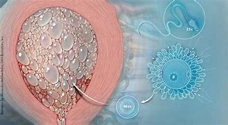
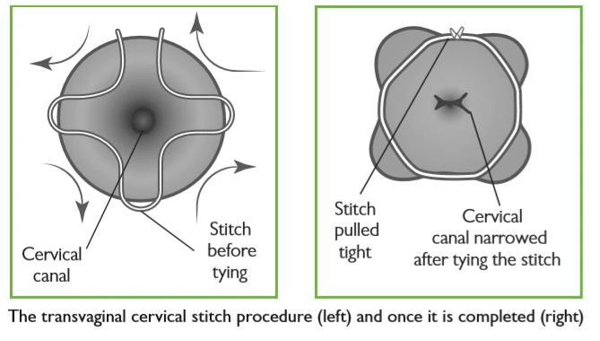
Original document · page 16
Take it easy; nothing in the vagina (no intercourse); no soaking in a tub; infection prevention (it is a suture).
Previa: (A) low-lying, (B) partial, (C) complete Types of placental separation (abruption)
Previa is a geography problem (where the placenta implanted); abruption is the placenta separating early from the uterine wall. Tell them apart by bleeding color, pain, and how the uterus feels.
Placenta previa
Placental abruption
Placenta previa: Painless, bright red
Placental abruption: Dark red; can be concealed (nothing shows until delivery)
Placenta previa: None or mild irritability
Placental abruption: Sudden, severe abdominal pain
Placenta previa: Soft, relaxed
Placental abruption: Hard, "board-like" (filling with blood), irritable contractions
Placenta previa: Usually reassuring, but check first
Placental abruption: Normal, then drifts down, then bradycardia and late changes
Placenta previa: Ultrasound (usually the 20-week scan)
Placental abruption: Clinical picture: an emergency
Placenta previa: Grand multip, previous cesarean, advanced maternal age, uterine scarring (myomectomy, D&C, any uterine surgery), smoking, diabetes
Placental abruption: Cocaine/amphetamines, hypertension, abdominal trauma, smoking, twins, a previous abruption
Placenta previa: Assess bleeding and fetal heart tones; CBC, type and screen
Placental abruption: Left side, oxygen, second large-bore IV, CBC, type and screen, coags
Placenta previa: No vaginal or cervical exams, no intercourse, nothing in the vagina
Placental abruption: Do not delay: the placenta is the baby's lifeline
Placenta previa: Complete previa = cesarean. A low-lying placenta at 20 weeks may move up; a complete one won't.
Placental abruption: Emergent delivery (case: in the OR within 4 minutes); emptied uterus firms up and bleeding stops
Placenta previa: Hemorrhage, fetal malposition, newborn with low hematocrit
Placental abruption: Leading cause of maternal death from hemorrhage; DIC; can recur
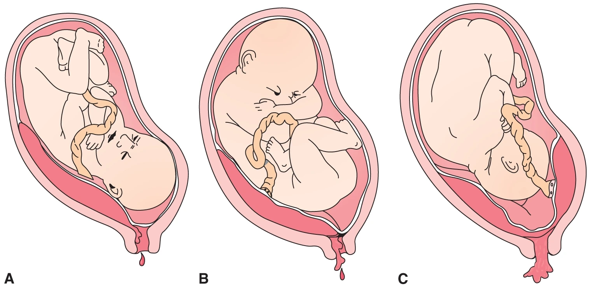
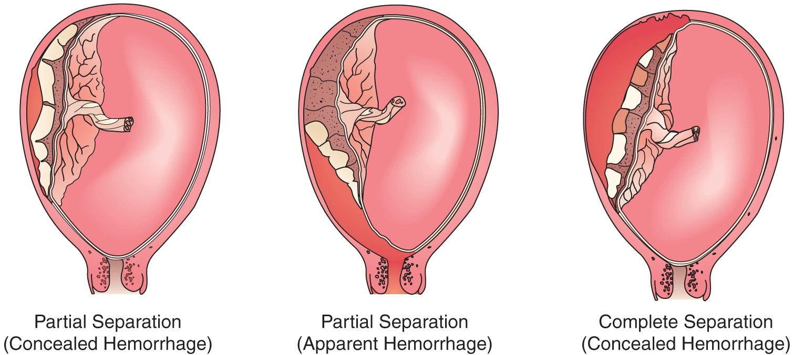
Original document · page 17
Painless bright red = previa. Painful dark red + board-like abdomen = abruption. A subtle abruption showed up as the FHR baseline drifting down over hours (150 → 140 → 130) with bloody show. No vaginal exams with previa.
Previa is a geography problem (where it implanted). In abruption the uterus fills with blood and feels firm, "just like a hematoma would be firm if you touched it."
Obstetric complications associated with DIC (Ch 21 slide) Petechiae and purpura
Rare but life-threatening. After or during a hemorrhage, clotting activates everywhere and uses up clotting factors and platelets, so the blood can no longer clot and bleeding accelerates. Tiny clots also block flow to the liver, kidneys and brain.
Abruption; peripartum hemorrhage; severe hypertensive disorders (preeclampsia with severe features, HELLP); retained stillbirth / missed abortion with sepsis; amniotic fluid embolism; acute fatty liver.
Bruising, petechiae, purpura, oozing from needle sites, nosebleeds, bleeding gums, bleeding anywhere, even after a hemorrhage seemed controlled.
Platelets LOW; fibrinogen LOW; PT/INR HIGH; PTT HIGH; D-dimer high; schistocytes (helmet cells) on smear.
Skin checks after any hemorrhage; volume expanders; blood replacement; keep her warm; ICU-level care.
Focus on platelets and fibrinogen (D-dimer is up in pregnancy anyway). Before any procedure, confirm the type and screen, CBC and coags were actually drawn (a retained-stillbirth case needed a mass transfusion with no type and screen on file).
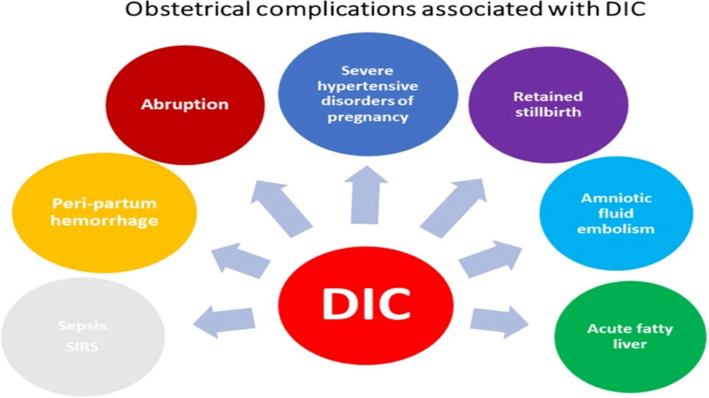
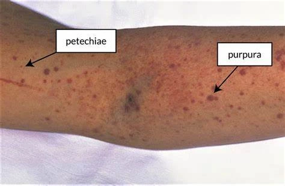
Original document · page 18
Labor between 20 weeks and 36 weeks 6 days (slide: 20–37 weeks). Goal: stall or stop it if possible.
Infection (UTI, STIs, BV, yeast: "a biggie"), dehydration, history of PTL, multiples, smoking, no prenatal care, PPROM, partner violence, accident or injury.
Regular contractions, pelvic pressure, nitrites in urine, cervix 3 cm / 50% at 31 weeks (should be closed). Preterm infant (Ch 21 slide)
Urinalysis and culture, CBC, type and screen, cervical cultures, fetal fibronectin (fFN): negative is reassuring; positive does not mean she will deliver.
Hydrate, treat the infection, activity restriction (evidence on strict bed rest and Trendelenburg is weak).
Purpose
Nursing points
Slows or halts contractions (off- label)
Boxed warning for maternal cardiac problems: short term only. Expect palpitations, tachycardia. Subcut every 30 min until contractions stop or HR 120. Hold if HR over 120.
Speeds fetal lung maturity (surfactant)
Usually 2 doses 24 hours apart; best 24–48 hours before birth (some benefit after 6 hours). Given before 34 weeks for any expected delivery.
Terbutaline is a "band-aid" that buys time so betamethasone can work. Start betamethasone as soon as possible. Know the 34-week threshold.
Types: chronic hypertension, gestational hypertension, preeclampsia without severe features, preeclampsia with severe features, eclampsia, HELLP.
Centered on the placenta: begins with pregnancy and resolves with delivery (not always right away; can be readmitted weeks postpartum). Narrow spiral arteries → vasospasm → hypoperfusion and endothelial injury. Usually 3rd trimester.
Original document · page 19
Liver: epigastric pain, N/V. Kidney: low urine output, proteinuria, swelling. Brain: headache not relieved by Tylenol, hyperreflexia. Retina: blurred vision, spots. Lungs: pulmonary edema. Placenta: poor perfusion.
BP, weight gain (case: 5 lb in 2 weeks), swelling of hands and face, epigastric pain, headache, visual changes, brisk DTRs, clonus, urine output, protein.
Preeclampsia plus seizures. Goal: prevent seizures.
Systolic over 160 or diastolic over 110: every pregnancy-related stroke in a review had this. Give the antihypertensive within ~30 minutes (case BP 162/99).
Complication of preeclampsia centered on the liver: Hemolysis, Elevated Liver enzymes (AST, ALT), Low Platelets (under 100,000). Diagnosed by labs.
Labs about every 8 hours. Rising AST/ALT and falling platelets = deliver. Platelets under 100,000 = no epidural or spinal.
Labetalol, hydralazine, nifedipine; IV rescue for severe-range BP.
HELLP acronym (Ch 21 slide)
Preeclampsia treatments (Ch 21 slide): antihypertensives, magnesium, frequent toxicity checks, calcium gluconate
Seizure prophylaxis; muscle relaxant; also lowers BP. Expected: warm, flushed. Low stimulation (dim lights, few visitors, phone off), strict I&O, IV fluids no more than 125 mL/hr, VS every 30 min, continuous fetal monitoring.
Decreased or absent DTRs, RR down (e.g., 8), drowsy/decreased LOC, urine under 30 mL/hr, hypotension, headache, vision changes, slurred speech; can progress to cardiac arrest.
1. Stop the infusion. 2. Get a magnesium level. 3. Give calcium gluconate (antidote). 4. Notify the provider. Can't get into the med dispenser? Bring the crash cart.
Magnesium relaxes the uterus: higher risk of postpartum hemorrhage and DIC.
You don't need fine detail on severe vs non-severe; understand preeclampsia as a whole (more or new symptoms, like visual changes, mean she is getting worse). The nurse does the frequent mag assessments: DTRs, RR, LOC, urine output.
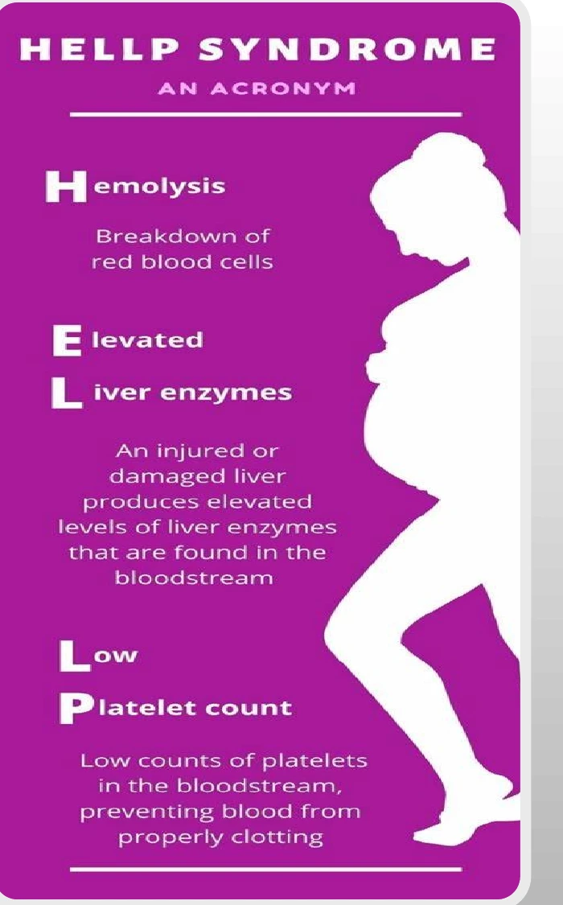
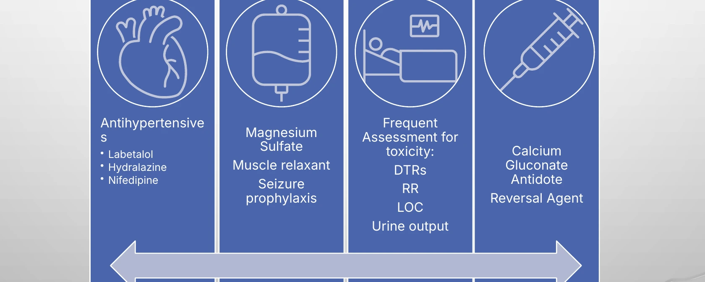
Original document · page 20
"An allergic reaction to your own placenta." Mag toxicity: "turn off the power before you start compressions": stop the source first.
Volume
Think
Volume: Less than 300 mL
Think: Fetal renal problem
Polyhydramnios More than 2000 mL Fetal GI problem (not swallowing fluid)
Delivery risks with either: cord prolapse, postpartum hemorrhage, prolonged labor.
Amniotic fluid (Ch 21 slide)
Review concept: know the cutoffs and which fetal system each points to.
Rh sensitization: first exposure, antibody formation, later pregnancy affected (Ch 21 slide)
An Rh-negative mother exposed to Rh-positive fetal blood makes antibodies that attack Rh- positive fetuses in later pregnancies. The baby's type is checked from cord blood after birth; the mother always gets a type and screen.
Synthetic antibody that keeps her from making her own (it "tricks" her body); does not harm the baby.
28 weeks; within 72 hours of birth if the baby is Rh positive; any time blood may mix: miscarriage, D&C, abortion, ectopic, amniocentesis, CVS, abdominal trauma.
Coombs test checks whether antibodies have formed.
Why, when, and what it protects: subsequent pregnancies.
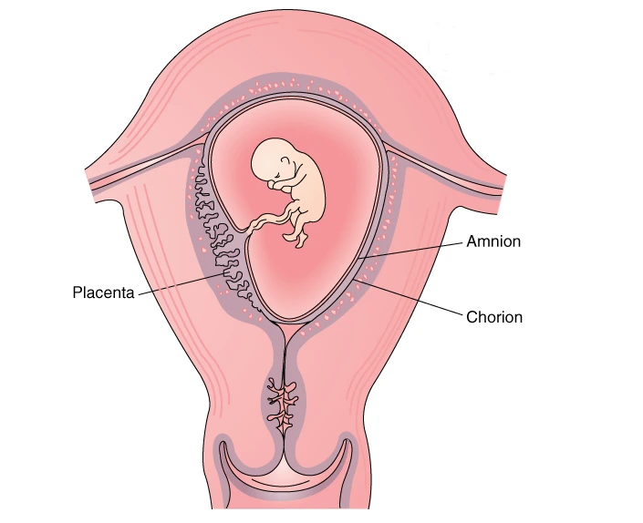
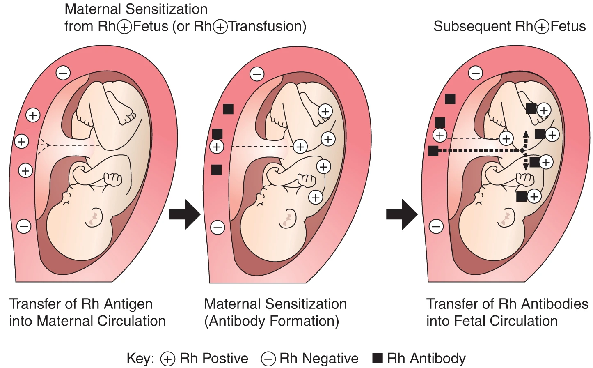
Original document · page 21
How
Placenta
How: Two eggs + two sperm; same or different sex
Placenta: Each has its own
Monozygotic One egg + one sperm that Shared: higher risk (twin-to- (identical) splits twin transfusion)
Twin placentation (Ch 21 slide)
Only fraternal vs identical detail is needed. Twins carry more risk overall: preterm birth and one twin smaller than the other.
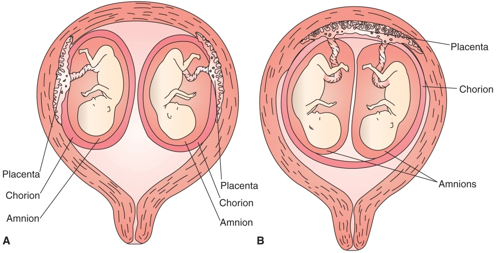
Original document · page 22
A G2P1 calls the unit at 9 weeks: "I think I'm miscarrying." Later items use other lecture cases (ectopic with shock signs, 31-week preterm labor, preeclampsia on magnesium).
A. "Lie down on bed rest for 24 hours."
B. "Spotting is harmless; keep up light activity."
C. "Come in to be examined, and save any tissue you pass."
D. "Use a tampon to put pressure on the cervix."
Cervix closed, FHT present, brown spotting, no pain ○ ○ ○ ○ Cervix dilated, membranes bulging, contracting ○ ○ ○ ○ All tissue passed, no FHT ○ ○ ○ ○ No FHT on scan, no labor signs, cervix unchanged ○ ○ ○ ○
M9-3 · SATA · recognize cues Which history items raise the risk of ectopic pregnancy? Select all that apply.
A. Pelvic inflammatory disease
B. IUD in place
C. Previous tubal ligation
D. Two previous vaginal births E. Endometriosis
M9-4 · MC · prioritize A client at 7 weeks has sudden left lower quadrant pain. BP 95/58, HR 132, RR 24, pale and
A. Methotrexate and discharge
B. Emergency surgery for a ruptured ectopic
C. An ultrasound next week
D. Bed rest and serial hCG
A. Stop prenatal vitamins and folic acid
B. Avoid alcohol
C. Expect serial hCG levels
D. Try to conceive again right away E. Wait a few months before conceiving
M9-6 · MC · recognize cues At 13 weeks by dates, the fundus is near the umbilicus, hCG is very high, and she has
A. Placenta previa
B. Molar pregnancy
C. Threatened abortion
D. Multiple gestation with twin-to-twin transfusion
Original document · page 23
Painless bright red bleeding ○ ○ Board-like, tender uterus ○ ○ Dark red bleeding after cocaine use ○ ○ Soft, relaxed uterus ○ ○ Seen on the 20-week ultrasound ○ ○
M9-8 · MC · take action A client with a known complete previa is admitted for bleeding. Which order should the
A. CBC and type and screen
B. Continuous fetal monitoring
C. Sterile vaginal exam to check dilation
D. Saline lock
A. Platelets low
B. Fibrinogen low
C. PT/INR prolonged
D. Fibrinogen high E. Schistocytes on the smear
M9-10 · MC · take action A 31-week client in preterm labor is due for terbutaline. Her HR is 126. What does the
A. Give the dose
B. Hold the dose and report
C. Give half the dose
D. Give it IM instead
A. "It will stop my contractions."
B. "It helps my baby's lungs mature before birth."
C. "It prevents seizures."
D. "It treats my infection."
M9-12 · SATA · recognize cues A client on magnesium sulfate: which findings suggest toxicity? Select all that
A. Absent DTRs
B. RR 8
C. Urine output 20 mL/hr
D. Feeling warm and flushed E. Drowsy, slurred speech
Original document · page 24
A. Give calcium gluconate
B. Stop the magnesium infusion
C. Notify the provider
D. Obtain a magnesium level
A. Recheck in 4 hours
B. Give the ordered antihypertensive within about 30 minutes
C. Encourage ambulation
D. Offer acetaminophen
A. Rising platelets, falling AST
B. Rising AST/ALT and falling platelets
C. Falling hemoglobin only
D. Normal liver enzymes
M9-16 · MC · take action An Rh-negative client has a D&C after a miscarriage at 10 weeks. What does she need?
A. Nothing; it's too early
B. RhoGAM
C. A Coombs test on the fetus
D. Betamethasone
M9-17 · MC · analyze cues An ultrasound shows polyhydramnios. Which fetal system does the nurse think about?
A. Renal
B. GI (swallowing)
C. Cardiac
D. Neurologic
Original document · page 25
Only an exam gives information. Bed rest doesn't stop a loss, spotting isn't harmless to dismiss, and a tampon hides blood you need to quantify.
Sort by how much tissue has been lost: closed cervix with FHT = threatened; dilated with bulging membranes = imminent; all passed = complete; no FHT and no signs = missed.
Anything that scars or blocks the tube (PID, ligation, endometriosis) or prevents uterine implantation (IUD).
One-sided pain plus shock signs = ruptured ectopic, a surgical emergency. Methotrexate is for unruptured.
Folic acid supports cell growth (we want cell death); alcohol can cause severe vomiting; serial hCG confirms it drops; wait so hCG is reliable.
Uterus larger than dates, very high hCG, and dark brown "sludgy" bleeding are classic molar pregnancy.
Painless bright red, soft uterus, seen on ultrasound = previa. Board-like uterus, dark red, stimulants = abruption.
No vaginal or cervical exams with previa: you can hit the placenta and cause hemorrhage.
DIC uses up platelets and fibrinogen, so both are low and clotting times are prolonged. Fibrinogen is not high.
Hold terbutaline if the heart rate is over 120 (boxed warning for maternal cardiac problems).
Betamethasone speeds fetal lung maturity (surfactant). Terbutaline slows contractions; magnesium prevents seizures.
Warm and flushed is an expected effect, not toxicity.
"Turn off the power before you start compressions": stop the source first.
Systolic over 160 or diastolic over 110 is severe range (stroke risk); treat within about 30 minutes.
Rising liver enzymes and falling platelets mean HELLP is worsening: deliver. Under 100,000 platelets = no epidural.
RhoGAM any time maternal and fetal blood may mix, including miscarriage and D&C, to protect future pregnancies.
Polyhydramnios (over 2000 mL) points to a GI problem (not swallowing); oligohydramnios points to the kidneys.
Original document · page 26
Organized by the P's: Power (contractions), Passenger (fetal position, presentation, size, cord), Passage (the birth canal). Dystocia = any deviation that impedes labor progress (dilation or descent), fast or slow.
Normal flora of the vaginal and rectal area. Not an STI and not contagious to others, but the baby is exposed in vaginal birth and can develop sepsis, meningitis or pneumonia.
Routine swab at about 36 weeks (sooner in preterm labor). Done on everyone eligible for vaginal birth, even with a planned cesarean. Retested every pregnancy. Also treat if GBS grows in urine.
Antibiotics in labor: penicillin, doses 4 hours apart. Goal: at least 2 doses before birth = covered. Provider decides when to start.
Increased newborn surveillance for infection; treat the baby if signs appear.
Hypotonic contractions
Hypertonic contractions
Hypotonic contractions: Weak, infrequent, uncoordinated ("wimpy")
Hypertonic contractions: Too frequent, too much tone, no rest between; painful but ineffective
Hypotonic contractions: Longer labor
Hypertonic contractions: Exhausting for mom; uterus and placenta can't refill, so less oxygen to the baby, then bradycardia
Hypotonic contractions: Full bladder; over-distended uterus (multiples, polyhydramnios, macrosomia, grand multip)
Hypertonic contractions: Latent phase with an unripe cervix while oxytocin is running (too much oxytocin)
Hypotonic contractions: Oxytocin (augmentation), amniotomy
Hypertonic contractions: Turn off oxytocin FIRST; fluids; position change; terbutaline only if it persists
Hypotonic contractions: Problem
Hypertonic contractions: Causes
Hypotonic contractions: Prolonged latent or active phase; arrest of dilation (e.g., stuck at 7 cm for 4–5 hours despite oxytocin, amniotomy, walking)
Hypertonic contractions: Unripe cervix, stuck in bed, CPD, large baby
Hypotonic contractions: Prolonged descent; arrest of descent (e.g., stuck at +2 for 3 hours); arrest usually means cesarean
Hypertonic contractions: OP position, CPD, pelvic shape
Original document · page 27
Hydration, pain relief, less stimulation (lights, noise), cervical ripening, oxytocin induction or augmentation, amniotomy, cesarean if needed.
Keep bladders empty in labor and postpartum: a full bladder blocks descent, stops the uterus contracting, and raises hemorrhage risk. Goal pattern: a contraction every 2–3 minutes with at least 60 seconds of rest. Keep stages simple: first stage = dilation, second stage = descent. You don't need the hour cutoffs, just what "arrest" means.
Birth within 3 hours of contractions starting.
Lacerations (perineum doesn't stretch gradually), hemorrhage, placental abruption.
Head trauma (no time to mold), bleeding (fragile vessels, no vitamin K yet), respiratory distress (not squeezed, more fluid), looks "stunned."
Often nurse-assisted; straight into a labor bed. Teach that the next birth may be even faster: come in as soon as contractions begin.
Artificially starting labor
Speeding up labor that started on its own but stalled (hypotonic)
Preeclampsia, GDM, post-dates (40–42+ weeks), IUGR, other medical conditions
Weak, spaced, irregular contractions; ROM with stalled contractions (infection risk)
Ripening if Bishop is low → oxytocin, amniotomy
Oxytocin, amniotomy
Modified Bishop score (Ch 23 slide): how inducible is she? Five parts, 0–3 points each. 8 or more = ripe enough to go ahead with oxytocin.
0
1
2
3
Closed
1–2
3–4
5 or more
0–30
40–50
60–70
80 or more
−3
−2
−1, 0
+1, +2
Firm
Medium
Soft
Posterior
Mid
Anterior
Original document · page 28
Lecture example: 2 cm (1) + 25% (0) + −2 (1) + medium (1) + posterior (0) = 3, so she needs a ripening agent.
Prostaglandin wafer behind the cervix (posterior fornix), releases over 12 hours. Withdrawal tape: pull it for hypertonic contractions, fetal distress or tachysystole. Teach: don't pull the string; stay in bed a few hours.
Prostaglandin tablets, buccal or vaginal.
Mechanical balloon dilates the cervix and stimulates Cervidil insert with withdrawal tape (Ch 23 slide) natural prostaglandins; non-drug; painful but effective.
You don't memorize the Bishop chart; you apply it to a case. Every ripening method's goal is to stimulate prostaglandins. Order: ripening agent, then oxytocin. Remove prostaglandins for fetal distress or tachysystole.
Cervix consistency: firm = tip of your nose, medium = ear lobe, soft = inside of your cheek.
Infusion setup (Ch 23 slide) Contraction tracing (Ch 23 slide)
Head engaged; vertex, longitudinal lie; cervix ripe (documented exam, or advocate for ripening); no CPD; reassuring strip (category I or II); no contraindication to vaginal birth (e.g., active lesions).
Its own pump/channel, not piggybacked; lactated Ringer's main line; connect at the port closest to the client so a fluid bolus doesn't push oxytocin.
Continuous fetal and contraction monitoring; document every 30 minutes; watch for water intoxication.
Contractions 5 min apart: increase. 2–3 min apart: leave it. Unstable fetal heart rate: reduce or turn it off.
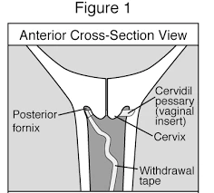
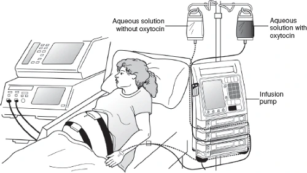
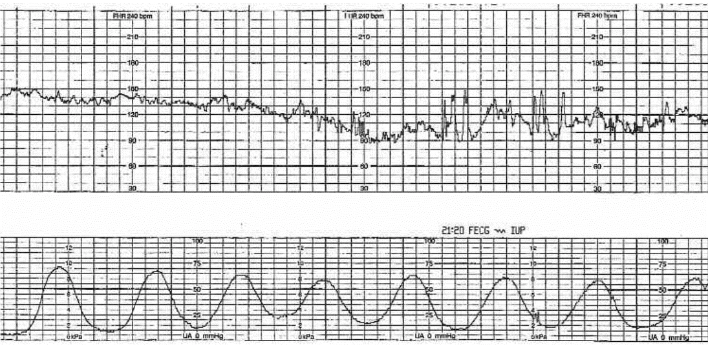
Original document · page 29
More than 5 contractions in 10 minutes, a contraction over 2 minutes, or a non-reassuring fetal heart rate. Risks: uterine rupture, fetal hypoxia.
Oxytocin is on the national high-alert list and is in nearly every OB legal case. "It is not a race." Be conservative; a sloppy pattern left running hurts the baby.
Complications related to the powers (Ch 23 slide)
What
Cues / risks
Actions
What: The uterus opens; fetus may be in the abdomen
Cues / risks: Sudden excruciating pain out of proportion. Risks: previous cesarean scar, hypertonic contractions or too much oxytocin, thinned muscle, trauma
Actions: OR immediately, oxygen, fluids, blood
What: Uterus turns inside out (NOT normal)
Cues / risks: Excessive bleeding. Causes: too much fundal pressure, pulling on the cord in third stage
Actions: Provider replaces the uterus; treat hemorrhage
What: Fluid enters maternal circulation, blocking/constricting the pulmonary artery
Cues / risks: Sudden dyspnea, cyanosis, unconsciousness, cardiac arrest, then DIC. Rare, unpredictable, high mortality; CPR less effective
Actions: Emergency response; DIC care
These are rare, but nurses must recognize them. Inversion is the abnormal one.
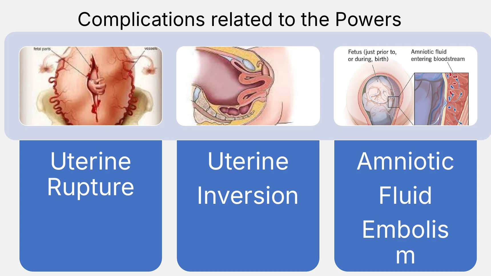
Original document · page 30
The cord slips below the presenting part and the head compresses it: little or no blood flow to the baby.
AROM with a high station (head isn't sealing the cervix), prematurity or small baby, polyhydramnios, transverse lie, long cord. Ruptured with a high station: don't get her up.
Sudden fetal bradycardia after membranes Knee-chest and Trendelenburg-type positions (Ch 23 slide) rupture; cord felt on exam (case: 33 weeks, AROM, FHR drops to 90).
1. Lift the presenting part off the cord with a gloved hand and keep it there; do not let go until the OR. 2. Call for help ("we have a cord"). 3. Oxygen. 4. Prepare OR and anesthesia for emergency cesarean. 5. If delayed: knee-chest or hands-and-knees (temporary only); cover an exposed cord with a saturated sterile towel.
Heart rate usually recovers once the head is lifted, but she still needs a cesarean.
Lift the head off the cord and never let go. Positioning is a band-aid. Any ruptured client with a high station is a prolapse risk.
A kinked garden hose: keep the pressure on, no flow gets through.
Head delivers, but the anterior shoulder is stuck under the pubic bone. About 5 minutes before serious hypoxia.
GDM, macrosomia (over 4000 g), post-dates; can still happen with a small baby or small pelvis.
Document the time the head delivers and the time the body delivers. Call for help and the NICU team.
McRoberts (legs pulled all the way back, knees to chest). Suprapubic pressure when directed. NO fundal pressure. Provider may rotate the baby, deliver the other arm, or break the clavicle. Shoulder dystocia (Ch 23 slide)
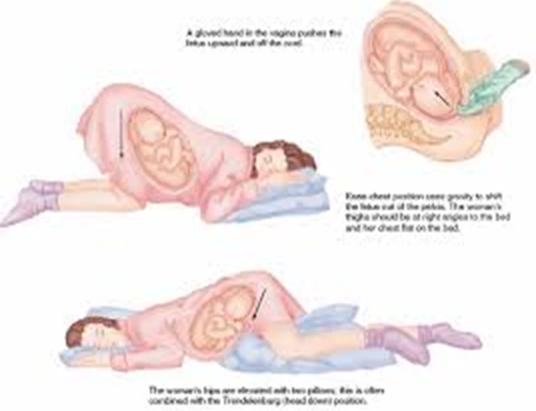
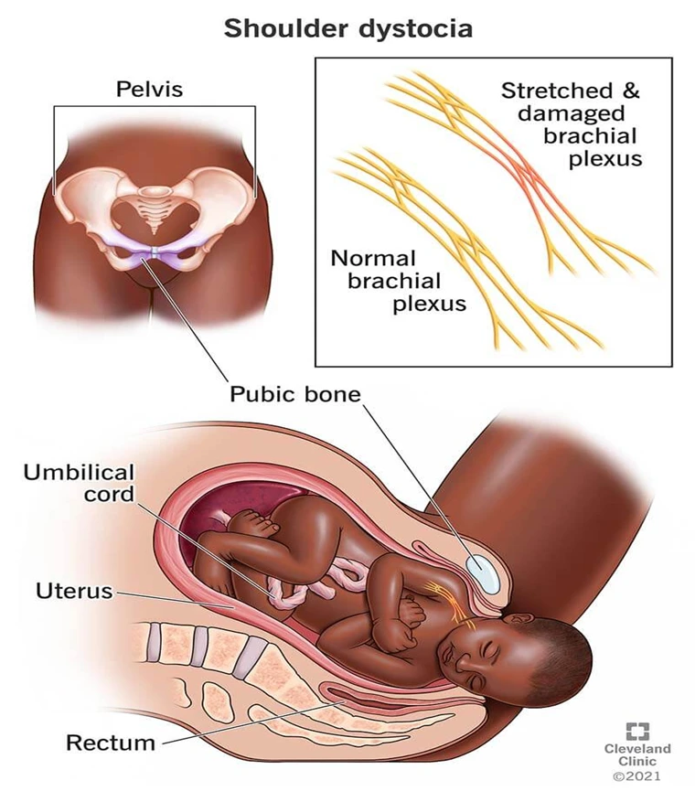
Original document · page 31
Brachial plexus injury (Erb's palsy): check arm movement and tone. Clavicle fracture: palpate for crepitus. Be ready to resuscitate.
McRoberts first, suprapubic (never fundal) pressure, time head-to-body, assess the arm and clavicle after birth.
Complications with the passenger (Ch 23 slide)
Concern
Management
Longer second stage, back labor, more rotation
Vaginal birth possible, just harder
More neonatal complications and birth injury
Usually cesarean
Can't deliver vaginally; high cord-prolapse risk
Cesarean
Too large a diameter
Cesarean
Scheduled procedure (not in labor) to turn a breech or transverse baby from outside the abdomen.
37+ weeks; adequate fluid (not oligohydramnios); single fetus; reactive NST.
Empty bladder; ultrasound in the room to confirm position; monitor fetal heart tones; pain meds or spinal; terbutaline to relax the uterus; keep her off her back (towel under the right hip).
ssage: CPD and inlet/outlet contraction PASSAGE MCR: MODULE 10 Cephalopelvic disproportion: the pelvis is too small for the baby's head.
Cephalopelvic disproportion: the pelvis is too small for the baby's head.
Inlet: AP diameter under 11 cm or transverse under 12 cm. Causes include genetics and childhood bone disease such as rickets. Found by pelvimetry (provider's manual exam).
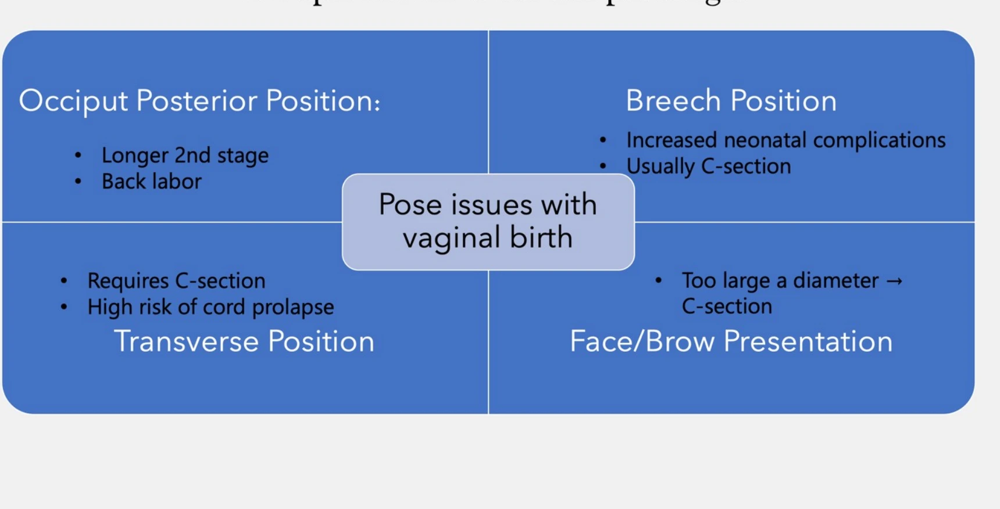
Original document · page 32
Borderline measurements with good position: she may try. Arrest of dilation or descent = cesarean. Later pregnancies may be scheduled cesareans.
Device Spoon-like blades on each side Suction cup with a gauge of the head, joined in the middle (green/yellow/red); pops off if pressure is too high
Baby Bruising, lacerations, facial nerve Cephalohematoma (resolves on its own), risks involvement scalp injury Mid forceps (Ch 23 slide) Attempts Up to 3 Up to 3 pop-offs, then stop
Empty bladder; fully dilated and effaced (a 9 cm forceps case ended in a major hemorrhage); membranes ruptured; head engaged.
Forceps are like salad tongs.
Anomalies of the cord and placenta (Ch 23 slide)
What it is
Key points
What it is: Unprotected fetal vessels run through the membranes over the cervix
Key points: When membranes rupture the vessels tear: fetal hemorrhage, sudden bradycardia, red blood with the fluid. Ultrasound diagnosis; surveillance; scheduled cesarean, never labor
What it is: Accreta = into the endometrium; increta = into the myometrium; percreta = through the uterus into other organs
Key points: Seen on ultrasound; major hemorrhage risk; percreta may need cesarean hysterectomy
What it is: Cord vessels branch in the membranes before reaching the placenta
Key points: Vulnerable if membranes tear
What it is: Normal = 2 arteries + 1 vein; one artery missing
Key points: Found at delivery; work up for cardiac and renal anomalies
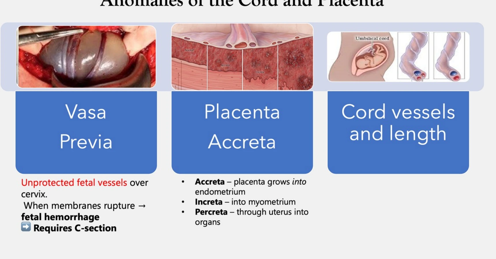
Original document · page 33
Placenta in two lobes / cord inserts at the margin
Vasa previa bleeding is fetal blood. Know accreta vs increta vs percreta. A two-vessel cord needs a work-up.
Artificial rupture of membranes with an amniohook; speeds labor and stimulates prostaglandins and oxytocin. Often part of induction; she may decline.
Head engaged and applied to the cervix; stable fetal heart rate; adequate dilation.
Fetal heart tones before and after (most important). Amniohook (Ch 24 slide) Document color, odor, amount and time. Meconium: be ready at delivery.
Umbilical cord prolapse; amniotic fluid embolism.
Incision of the perineum in second stage to enlarge the opening. Not routine; only as needed. The consent lists possible episiotomy and lacerations because there may be no time to discuss it in an emergency.
Macrosomic infant; preterm infant (less pressure on the head); shortening second stage in emergencies such as fetal distress.
Midline vs mediolateral (Ch 24 slide)
Direction
Advantages
Disadvantages
Direction: Straight down toward the rectum
Advantages: Heals well, less pain
Disadvantages: Higher risk of 3rd–4th degree tears into the rectum; can result in a retroperitoneal hematoma (slide)
Direction: Downward at an angle
Advantages: Lower risk of rectal extension
Disadvantages: More discomfort, harder repair
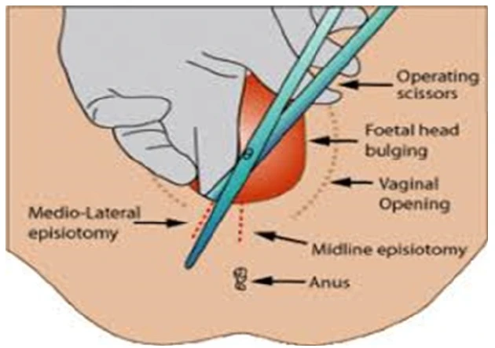
Original document · page 34
Spiral electrode on the fetal scalp: continuous, accurate fetal heart rate.
Catheter in the uterus: most accurate contractions, exact strength in mmHg and Montevideo units. Port allows amnioinfusion (fluid to cushion the cord and relieve variable decelerations).
Obesity, high-risk pregnancy, trouble tracing externally, concerning strip. Not standard for everyone. IUPC and FSE (Ch 24 slide)
IUPC and FSE (Ch 24 slide) Membranes ruptured and at least 3 cm dilated.
Infection; limited mobility.
Provider presses or scratches the fetal head during a vaginal exam. Expected: an acceleration (reassuring). No acceleration may mean acidosis or poor oxygenation: possible cord gas or change in plan.
Scalp stimulation (Ch 24 slide)
Indications
Known CPD, malpresentation, active HSV lesions, repeat cesarean, previous classical incision, known previa
Client request; discouraged (major surgery); counsel on risks; insurance may not pay
Fetal distress, abruption, cord prolapse, failed vacuum or forceps, arrest of descent
Notes
High-contractility area: higher rupture risk, even laboring at home. Not eligible for vaginal birth after cesarean; repeat cesareans.
Low-contractility area: lower rupture risk.
More blood loss and postpartum hemorrhage; infection; long recovery; organ injury (bladder); scarring that complicates future pregnancies.
Respiratory difficulty (not squeezed, more lung fluid); temperature (cold OR).
NPO after midnight; teaching (she'll be behind a curtain); IV; prep. Nurse circulates, anesthesia gives meds, two providers operate.
Classical incision = no vaginal birth later. Know maternal risks. Elective cesarean needs risk counseling.
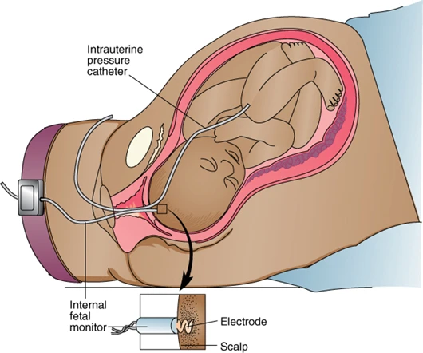
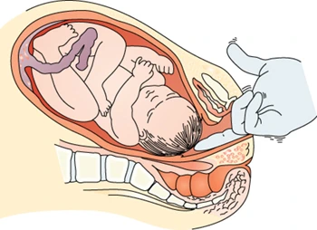
Original document · page 35
A G1 at 40 weeks 5 days is admitted for induction. GBS positive at 36 weeks. (Later items use the lecture cases: cord prolapse at 33 weeks, shoulder dystocia, internal monitoring.)
A. One dose of penicillin any time in labor
B. At least 2 doses of penicillin, 4 hours apart, before birth
C. Antibiotics started after birth
D. A single dose at 36 weeks
M10-2 · Calculation · analyze cues Her exam: 3 cm, 50% effaced, station −1, soft, mid-position. Using the Bishop
M10-3 · SATA · recognize cues Before starting oxytocin, the nurse verifies which? Select all that apply.
A. Fetal head engaged, vertex
B. Ripe cervix documented
C. Category I or II strip
D. Known CPD E. Oxytocin piggybacked into the port closest to the client
M10-4 · MC · take action On oxytocin, she has 6 contractions in 10 minutes and the FHR is falling. First action?
A. Increase the rate
B. Turn off the oxytocin
C. Call for an epidural
D. Do a vaginal exam
M10-5 · MC · take action A dinoprostone insert is in place and tachysystole develops. What does the nurse do?
A. Leave it; it lasts 12 hours
B. Remove it with the withdrawal tape
C. Start oxytocin
D. Give misoprostol
M10-6 · MC · prioritize A 33-week client has AROM; the FHR drops to 90 and the nurse feels the cord. First
A. Place her in knee-chest
B. Lift the presenting part off the cord and keep it there
C. Apply oxygen
D. Call the provider from the desk
A. McRoberts maneuver
B. Suprapubic pressure when directed
C. Fundal pressure
D. Note the time the head delivered
Original document · page 36
M10-8 · SATA · recognize cues Which risk factors predispose to shoulder dystocia? Select all that apply.
A. Gestational diabetes
B. Macrosomia over 4000 g
C. Post-dates
D. Oligohydramnios E. Preterm birth
M10-9 · MC · analyze cues A laboring client with a previous cesarean suddenly has excruciating pain out of
A. Placenta previa
B. Uterine rupture
C. Normal transition
D. Vasa previa
M10-10 · SATA · generate solutions Requirements before an external cephalic version? Select all that apply.
A. 37 weeks or more
B. Adequate amniotic fluid
C. Twin gestation
D. Reactive NST E. Active labor
Fully dilated ○ ○ Membranes ruptured ○ ○ Empty bladder ○ ○ Head engaged ○ ○ Epidural in place ○ ○
M10-12 · MC · analyze cues Membranes rupture and there is red blood in the fluid with sudden fetal bradycardia.
A. Mother's, from placenta previa
B. The fetus's, from vasa previa
C. Mother's, from a cervical laceration
D. Bloody show
A. Document the time only
B. Assess fetal heart tones before and after
C. Ambulate her right away
D. Start oxytocin
Original document · page 37
A. Membranes must be ruptured
B. Cervix at least 3 cm
C. IUPC shows exact contraction strength
D. No infection risk E. Readings stay adequate when she moves
A. FHR acceleration
B. No change
C. Late deceleration
D. Bradycardia
M10-16 · MC · teaching A client with a previous classical cesarean asks about a vaginal birth next time. Best
A. "You can try once labor starts."
B. "A classical incision isn't eligible for vaginal birth; you'll have a repeat cesarean."
C. "Only if the baby is small."
D. "Yes, with an epidural."
A. Start oxytocin
B. Help her empty her bladder
C. Perform amniotomy
D. Prepare for cesarean
Original document · page 38
Penicillin every 4 hours; at least 2 doses before birth = covered. Otherwise the newborn gets increased surveillance.
A score of 8 or more means the cervix is ripe enough to proceed with oxytocin. Apply the chart; don't memorize it.
CPD is a contraindication; oxytocin runs on its own pump, connected at the port closest to the client (not piggybacked).
More than 5 contractions in 10 minutes with a falling FHR: turn off oxytocin first, then fluids and position.
The withdrawal tape lets you remove prostaglandins for tachysystole or fetal distress.
Relieve cord compression first and don't let go; then call for help, oxygen, and OR. Knee-chest is a temporary band-aid.
Never fundal pressure; it wedges the shoulder further. McRoberts and suprapubic pressure create space.
GDM, macrosomia and post-dates. It can still happen with a small baby.
Sudden, out-of-proportion pain with a uterine scar = rupture: OR immediately, oxygen, fluids, blood.
Also a single fetus; ECV is a scheduled procedure, not done in labor.
An epidural is not on the list. Full dilation matters (a 9 cm forceps case ended in major hemorrhage).
Vasa previa: unprotected fetal vessels tear when membranes rupture, so the bleeding is fetal.
FHT before and after is the most important step (watch for cord prolapse); then document color, odor, amount and time.
Disadvantages are infection risk and limited mobility.
An acceleration is the expected, reassuring response; none may suggest acidosis.
Classical (vertical) incisions sit in a high-contractility area with higher rupture risk.
A full bladder blocks descent and weakens contractions; empty it before escalating.
Original document · page 39
Do this
Magnesium toxicity Stop infusion → mag level → calcium gluconate → provider
Turn off oxytocin first; fluids; position; terbutaline if it persists
Remove it (withdrawal tape)
Lift presenting part off the cord, never let go; help; O2; OR. Knee-chest is temporary
McRoberts; suprapubic pressure; NO fundal pressure; time head-to-body
Bleeding + FHT, CBC, type and screen; NO vaginal exam
Left side, O2, second large-bore IV, CBC/T&S/coags, FHT
OR immediately, O2, fluids, blood
Emergency response; DIC care
Provider replaces uterus; treat hemorrhage
Treat shock; surgery
Antihypertensive within ~30 minutes
Sit her up; never supine
Feed within 30 min; heel-stick glucose
Key points
Terbutaline Tocolytic; short term; hold if HR > 120
IM to mother; fetal lungs; 2 doses 24 h apart; before 34 weeks
Seizure prophylaxis; ≤125 mL/hr IV fluids; VS q30min; PPH risk after birth
Magnesium antidote
Antihypertensives; IV rescue for severe range
Unruptured ectopic (and retained molar tissue); stop folic acid, no alcohol, serial hCG
28 weeks; within 72 h if baby Rh+; any time blood may mix
High-alert; own pump; LR main line; port closest to client
Prostaglandin ripening; remove for tachysystole/distress
GBS; q4h; ≥2 doses before birth
Stop clot growth; watch for bleeding
Doesn't cross placenta; needs rise in 2nd/3rd trimester
The first downloaded picture has mixed-up labels and a repeated P. Use the correction above when studying either image.
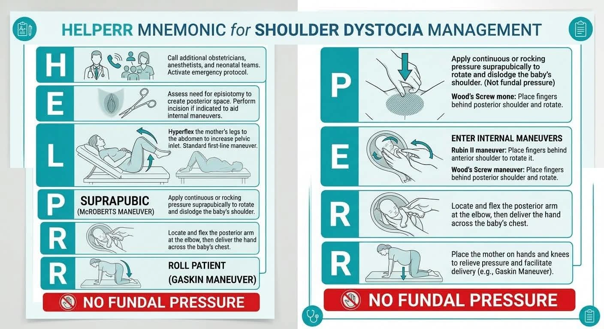
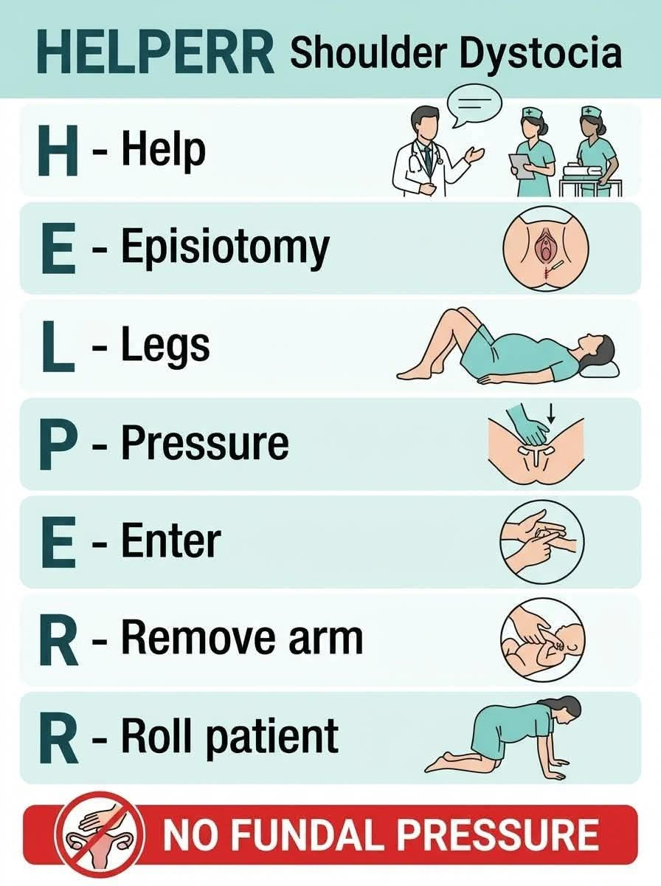
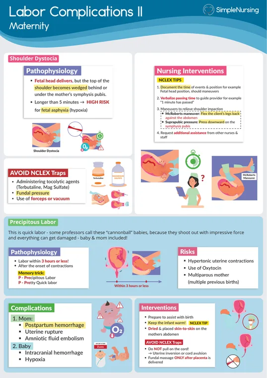
Compare location and painless bleeding with early separation, pain and a firm uterus.
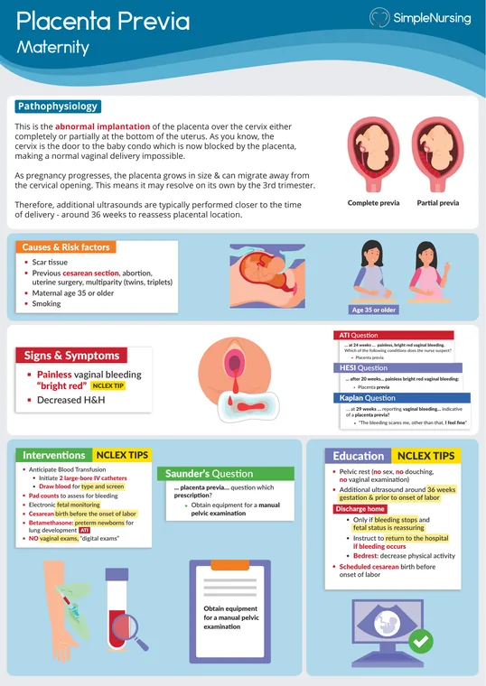
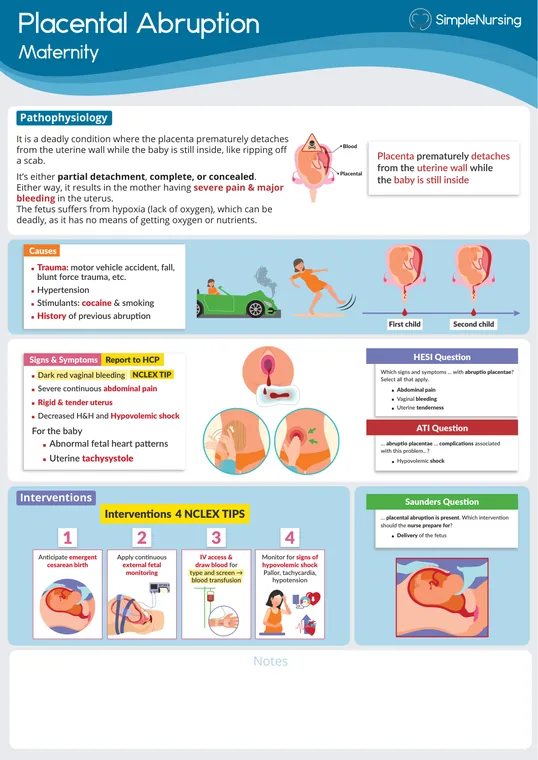
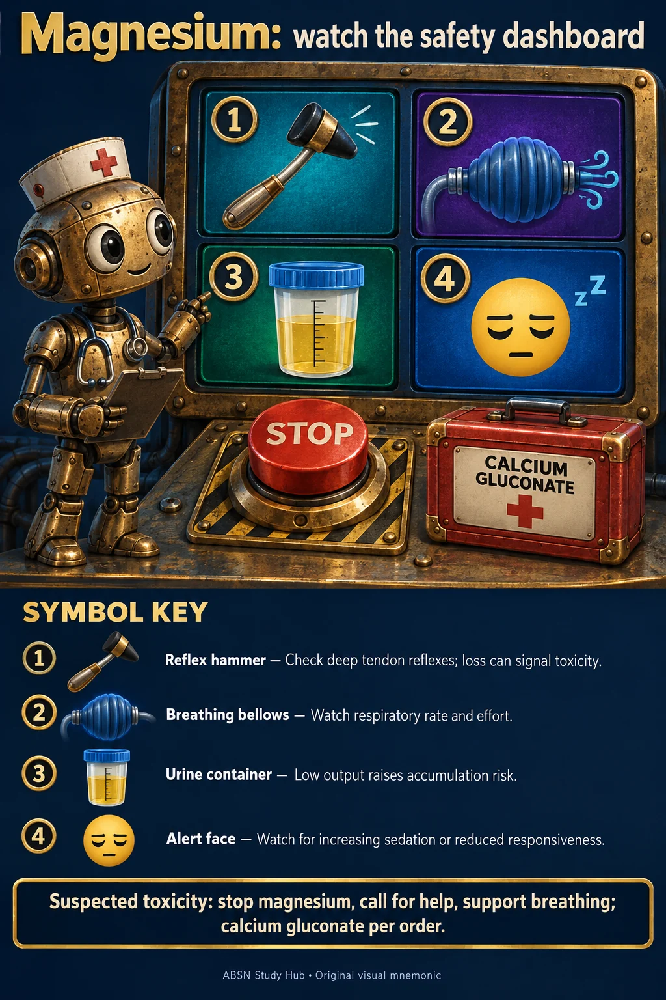
Original mosaic illustrations created with AI for the ABSN Study Hub.
Back to top ↑